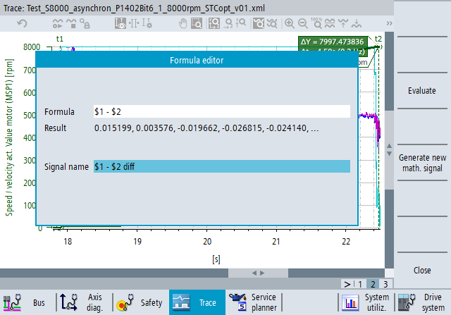

| Note |
|
An Expert Trace license is required to use this function, see "Expert Trace functions". |
Mathematical expressions can be applied to the measured data. This functionality is available with the toolbar icon "Mathematical operations". When the icon is clicked, a formula editor dialog opens.
You can define mathematical expressions and evaluate them. If the result of the mathematical expression is a new signal, you can display it as a plot. If the result is a single value, then the value is displayed in the formula editor.
The maximum number of signals in the trace configuration (recorded and mathematical) cannot exceed 32.
The measured data of a signal can be accessed by the '$' character and the numerical identifier of the signal. This identifier can be found in the second column (#) of the signal table. Example:
Syntax to access the signal with the #ID 1: $1
Syntax to access the signal with the #ID 14: $14
Input the signal formula and click the "Evaluate" softkey. The result field displays the first five calculated values.
Input a name for the new signal. If the name field was empty before, then the formula will be automatically copied into it. Otherwise, the previous name will be kept. (Changing the formula does not make any changes to the name field.)
Click the softkey "Generate new math. signal". The softkey is only active if the evaluation was successful and the name field is not empty.
The new mathematical signal is added to the trace configuration and displayed in the trace diagram. The address field in the signal table displays the formula, the name field displays the signal name that was entered in the editor window.
Special cases when a trace configuration contains mathematical signals:
When a new trace recording is started, the mathematical signals are automatically recalculated after the recording is stopped.
Mathematical signals can be added to the trace configuration even in compatibility mode, when the configuration is otherwise not editable.
Mathematical signals can be saved into the session file and reloaded, the same way as real signals. However, only the formula will be saved into the file. The data are not saved, because they will be recalculated when the session file is loaded.
If you click a recycle bin icon in the signal table to delete a signal, and that signal is used in the formula of one or more mathematical signals, a warning message will be displayed that the math signals based on this signal will be deleted from the configuration too. You can confirm or cancel the deletion.
If you change a parameter of a variable (e.g. axis, channel or indices), then the measured data of this signal are deleted. If a mathematical signal is based on that real signal, then the calculated signal data will also be deleted, but the formula of the mathematical signal remains in the trace configuration.
When the measured data are exported into CSV files, the mathematical signals are not exported.
MIN($1) | Call the minimum value of the signal |
MAX($1) | Call the maximum value of the signal |
AM($1) | Call the arithmetic mean of the signal |
EFFECTIV($1) | Call the root mean square of the signal |
AV($1, 3) | Calculate the moving average of the signal. The second argument of the function defines the number of data points to calculate the average value and must be between 3 and 99. |
LSM($1) | Find the best fit line over the data points of the signal using the least square method |
LSME($1) | Find the best fit line over the data points of the signal using the least square method and return the remaining error as signal: $1-LSM($1) |
REC($1) | Calculate the reciprocal of each data point of the signal. If the signal value is 0, the calculated value will also be 0. |
ABS($1) | Calculate the absolute value of each data point of the signal |
SQR($1) | Calculate the square of each data point of the signal |
SQRT($1) | Calculate the square root of each data point of the signal. If the signal value is negative, the calculated value will be 0. |
DIF($1) | Calculate the first derivative of the signal |
DIF2($1) | Calculate the second derivative of the signal |
INT($1) | Calculate the integral of the signal |
DEMOD($1) | Replace the 359 -> 0 transitions of the data points with 359 -> 360 transitions. For example, if the original signal values are [..., 357.1, 358.4, 0.4, 2.0, ..., 358.0, 359.6, 1.2, ...] then the result of DEMOD($1) will be [..., 357.1, 358.4, 360.4, 362.0, ..., 718.0, 719.6, 721.2, ...] |
The following operators are supported: +, -, *, /, <, <=, >, >=, ==, (, ), !=
The unary minus operator is also supported (e.g. 2 + -5), but not the unary plus operator.
Every mathematical expression can contain various operators and several function calls.
Add 5.4 to each data point of the signal | $1 + 5.4 |
Display the difference between two signals (for example actual value - target value) | $1-$2 |
Display the absolute value of the difference of two signals | ABS($1-$2) |
Find the maximum difference of two signals | MAX(ABS($1-$2)) |
Check if the maximum difference is below 2.1 | MAX(ABS($1-$2)) < 2.1 |
Display the difference to the least square method fit line | ABS($1 - LSM($1)) |